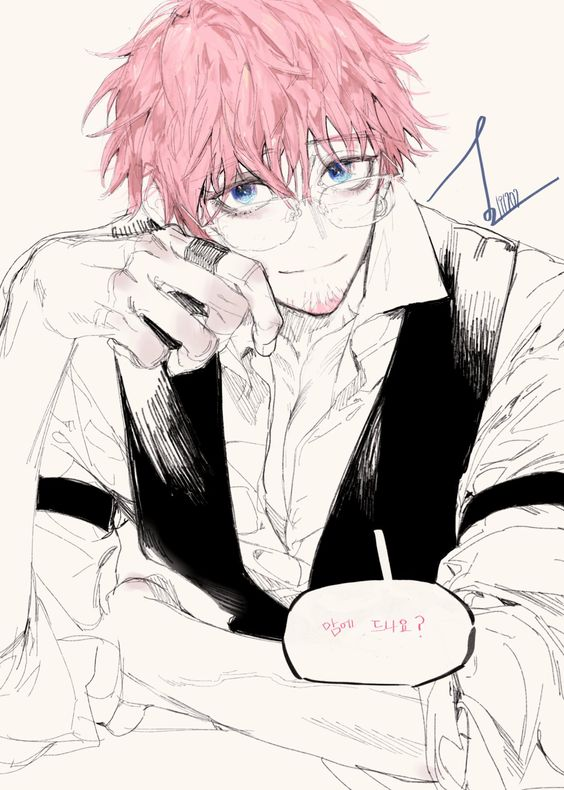

Zilean dá cidadania para todos os criminosos que apareceram em Liones, será isso bondade ou ele quer aumentar suas chances nas próximas eleições?

Quem era esse cara? Um dos ladrões, mas ele não estava nas imagens feitas por Zilean... talvez um amante? Afinal eles tiveram uma conversa meio estranha no palco, diz algumas mulheres, "Ele é é muito lindo, e o jeito que ele fala dos vinhos..."